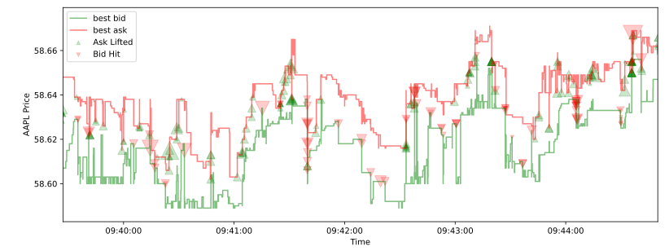
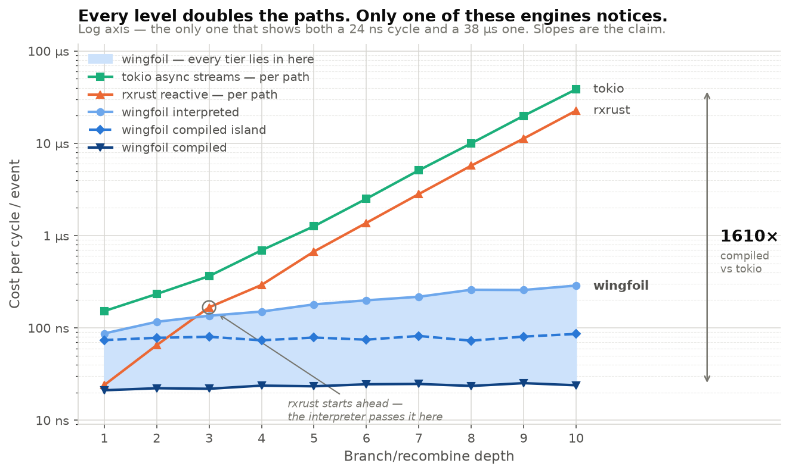

wingfoil
How making node semantics an associated function
bought us an interpreter and a compiler — from one copy of the code,
with the boundary between them wherever you want it.
github.com/wingfoil-io/wingfoil · Apache-2.0
The problem
Market data arrives when the venue sends it — fast, irregular, and not on your schedule. Orders tick when you act. Fills tick when the venue decides. Nothing is aligned, and nothing shares a clock.
sample on another stream's tick ·
throttle to at most once per interval ·
window and buffer for a bounded look-back ·
distinct to drop repeats · merge and
split to recombine.
The budget is nanoseconds per node, not microseconds. This is the workload where the framework's overhead — not your arithmetic — is what you are paying for.
The solution
Propagates one path at a time, so a shared node is re-visited once per path.
Same shape, plus a future per node per level and a poll to dispatch it.
Branch and recombine, and both of them double every level. Wingfoil stays flat.
The surface
let g = GraphBuilder::new();
let printed = g
.ticker(Duration::from_millis(100))
.count()
.map(|i| format!("tick {i}"))
.for_each(|msg: &String| { println!(" {msg}"); Ok(()) });
g.build().run(RunMode::HistoricalFrom(NanoTime::ZERO), RunFor::Cycles(5))?;historical run (instant):
tick 1
tick 2
tick 3
tick 4
tick 5cargo run -p wingfoil --example hello_graph
Motivation, not thesis
let (fills, prices) =
csv_read(&g, &src, get_time, true, None)?
.map(move |chunk: &Burst<Message>| {
process_orders(chunk, &book)
})
.split();
prices.filter_none().distinct()
.csv_write(&prices_path)?;
fills.csv_write(&fills_path)?;Three different frequencies in one graph: many messages share a timestamp, top-of-book changes less often, trades are sparser still.
15040 two-way prices -> prices.csv
4169 fills -> fills.csv
in 119.704ms91,998 messages · one hour of AAPL · --release

The hook
let mut source = g.constant(1_u128);
for _ in 1..128 {
source = source.join(&source, |a, b| a + b); // branch and recombine
}1 ticks processed in 12.953µs
value 170141183460469231731687303715884105728That value is 2127 — the correct answer, which is also exactly the number of source→sink paths a framework that propagates one path at a time would have to walk.
Why
A node runs after everything it reads, exactly once, no matter how many upstream paths lead to it.
Libraries that propagate along one path at a time re-visit shared nodes once per path — so on branch-and-recombine their cost doubles every level while ours stays flat.
Measured slopes: 2.01× and 1.94× per level. Ours: flat.
Least squares over ten depths gives ≈ 68 ns + 22 ns × depth interpreted — one more node per level, while the path count runs to 1024.

Log scale. At depth 10: ~39× faster than rxrust, ~134× than tokio async streams. The flatness is the claim, not the multiplier — and both comparisons are written down with the caveats that cut against us.
Act two
The one decision everything follows from
trait Op {
type Cfg; // construction-time config; closures live here
type State; // engine-owned mutable state
type In<'a>; // typed inputs, passed in per cycle
type Out; // the produced value
const ACTIVATION: Activation;
fn cycle(cfg: &mut Self::Cfg, state: &mut Self::State,
input: Self::In<'_>, ctx: &mut Ctx<'_>) -> Result<Tick<Self::Out>>;
}Read what is absent. Nothing here says how state is stored, where inputs come from, or who calls it.
The payoff
const ACTIVATION states scheduling behaviour
where a machine can read it.
NONE / SCHEDULES /
THREADED / ALWAYS — a const, so the interpreter
reads it at wiring time and the compiled emission folds it into a
dispatch condition after monomorphization.What it buys
| Engine | Who owns state | Dispatch |
|---|---|---|
| Interpreted | the builder's slots | one dyn call per node |
| Compiled | local variables in a generated fn | monomorphized, inlinable |
Not two implementations kept in sync by discipline and tests. One implementation — which is why they cannot drift.
A nested island mounts the compiled emission as one node of an interpreted graph — monomorphized inside, one dyn call outside. Hot core compiled, edges left open for threaded sources and feedback. It is not a third engine, which is exactly why it lands between the two on every benchmark.
The front door
wingfoil::nitro! {
fn odds_evens(g: &GraphBuilder) -> Stream<String> {
let count = g.ticker(PERIOD).count();
let is_even = count.map(|i| i.is_multiple_of(2));
let is_odd = is_even.map(|b| !b);
let odd_str = count.filter(&is_odd).map(|i| format!("{i} is odd"));
let even_str = count.filter(&is_even).map(|i| format!("{i} is even"));
let labelled = odd_str.merge(&even_str);
labelled
}
}Out comes odds_evens::interpreted(),
odds_evens::compiled() and odds_evens::nested() —
from the same tokens.
The wiring function stays valid, reviewable
Rust either way. That property was deliberately never traded away:
count is read three times, so it is a shared apex node — the
macro derives a real DAG, not a chain.
…and this is what it becomes
let mut __k = Kernel::new(run_mode, run_for);
let mut __cfg_wf_anon_1 = PERIOD;
let mut __state_wf_anon_1 = __wf_op_ticker_seed_state(&__cfg_wf_anon_1);
let mut __v_wf_anon_1 = __wf_op_ticker_seed_value(&__cfg_wf_anon_1);
// … one cfg / state / value local per node, 11 nodes …
let mut __dirty = [false; 11usize];
while __k.begin_cycle(&mut __dirty) {
let __t_wf_anon_1 = /* activation */ && {
let mut __ctx = Ctx::new(&mut __k, 0usize);
match __wf_op_ticker_cycle(&mut __cfg_wf_anon_1,
&mut __state_wf_anon_1, (), &mut __ctx)
.context("node 0 (wf_anon_1: ticker) cycle")? {
Tick::Value(__val) => { __v_wf_anon_1 = __val; true }
Tick::Silent(__val) => { __v_wf_anon_1 = __val; false }
Tick::Quiet => false,
}
};
// … 10 more, emitted in topological order …
}abridged · elisions marked · all 1,730 lines committed verbatim beside the example:
github.com/wingfoil-io/wingfoil → examples/core/dual_mode/expanded/
Both engines are in the binary
$ WINGFOIL_TIER=interpreted dual_mode
0.000_000 odds/evens "1 is odd"
0.010_000 odds/evens "2 is even"
0.020_000 odds/evens "3 is odd"
…
ran 10 cycles on the interpreted tier$ WINGFOIL_TIER=compiled dual_mode
0.000_000 odds/evens "1 is odd"
0.010_000 odds/evens "2 is even"
0.020_000 odds/evens "3 is odd"
…
ran 10 cycles on the compiled tierSame binary. Same output. Different engine.
Develop interpreted — it honours the
tracing span features and supports dynamic graph surgery, neither of which
the monomorphized tiers have. Deploy compiled.
Tier::default() falls back to the build profile, so the usual
workflow needs no call-site change at all.
What it cost, what it bought
| Workload | Nodes | legacy | interpreted | compiled | nested |
|---|---|---|---|---|---|
| dense_chain | 37 | 7.95 ms | 6.64 ms | 187 µs | 931 µs |
| fanout | 103 | 17.05 ms | 11.99 ms | 324 µs | 1.43 ms |
| fan_in_16 | 20 | 4.76 ms | 2.67 ms | 174 µs | 855 µs |
| fan_in_64 | 68 | 10.72 ms | 6.47 ms | 259 µs | 938 µs |
| fan_in_256 | 260 | 38.08 ms | 31.60 ms | 2.55 ms | 3.10 ms |
| accumulate | 3 | 2.08 ms | 1.43 ms | 326 µs | 1.40 ms |
| sparse | 205 | 2.50 ms | 2.11 ms | 311 µs | 751 µs |
| sparse_wide | 781 | 3.07 ms | 2.01 ms | 355 µs | 896 µs |
Shared 4-core cloud VM — read the ratios, not the absolute times. Every comparison measured back to back in one run. The benchmarks are deliberately not a CI gate: criterion thresholds are too noisy on shared runners, so the perf property we actually gate — that per-cycle work tracks active nodes, not graph size — is a deterministic test instead.
The outcome we most doubted
Stream is closed.Combinators are extension traits, never
inherent methods — so a downstream crate adds vocabulary that feels native
without this crate knowing about it. Two public primitives:
GraphBuilder::source and Stream::wire.
#[op(build = my_thing)] // on your Op impl, in your crate
impl Op for MyThing { … } // → the interpreted builder method
// → the nitro! forwarders compiled emission dispatches throughA user-defined op gets interpreted and fully-compiled coverage, within 2.4% of a built-in — with no edit to the macro crate and no table to register in.
There is no per-op table in the macro. Built-in and user ops take the identical path. If you are editing a match arm to add an op, you are on the wrong road.
The unglamorous half
NONE | fires when an upstream ticks |
SCHEDULES | also wakes itself off the time queue — tickers, delays |
THREADED | fed from another thread across the channel layer |
ALWAYS | busy-spun every cycle — socket polling |
It is a const, so the interpreter reads
it at wiring time and the compiled tier folds it into a dispatch
condition. Values sharing a timestamp ride one Burst and
are delivered atomically — never coalesced to latest-wins.
The graph core is synchronous and lock-free.
Tokio lives at the edges — produce_async maps an
async stream onto a typed graph edge — so I/O stays in the async world
and compute stays in the graph. You are not made to pick one runtime
for everything.
| iceoryx2 | Latency | CPU |
|---|---|---|
| Spin | lowest | burns a core |
| Threaded | one channel hop | lower |
| Signaled | highest | true blocking |
16 I/O adapters, each with a runnable example — Kafka · KDB+ · PostgreSQL · Redis · etcd · ZeroMQ · FIX 4.4 · Aeron · iceoryx2 · Fluvio · WebSocket · WS client · Prometheus · OTLP · CSV · line files. Plus on-graph statistics and augurs, which are not I/O at all.
The unglamorous half
The whole surface. Everything below is a view onto this, not a reimplementation.
The same combinators and run modes. Write node bodies in Python, get results out as a pandas frame — and a plugin seam to author an op, a sub-graph or a whole adapter in Rust and call it from Python when a node gets hot.
Decodes the wire format using the server's own codec compiled to wasm, so there is no second implementation of the format to drift.
A Burst stays atomic — values
sharing a timestamp grouped, never latest-wins, never dropped,
identically in both run modes. And per-hop latency stamps survive a hop
from Python into a Rust node and back.
The unglamorous half
runner.run(RunMode::HistoricalFrom(NanoTime::ZERO), RunFor::Forever)?; // backtest
runner.run(RunMode::RealTime, RunFor::Forever)?; // livetime() is engine time,
source-driven. Under replay it is pure logic — the kernel pops the
earliest scheduled callback and consults no clock at all. This
is the only one business logic may touch, and it is what makes a replay
deterministic.
wall_time() is this cycle's wall-clock
snap, for latency stamping. A real clock read in both modes, so
"time spent" means the same in a backtest as live. Never branch logic
on it.
A live source rejects
HistoricalFrom at wiring time. A historical run
block-collects its input up front, so an unbounded live tail would
deadlock at start.
Rejecting it while you wire turns a hang into an error message — which is the difference between a bug you find in ten seconds and one you find at 3am.
The pattern
The logic is still behind a boundary. What moved is who owns the storage.
Encapsulation says bundle state with behaviour. Single responsibility says one reason to change. Follow the first far enough and you break the second — our old node was computation and storage and plumbing, and nothing outside could call one without the other two.
Encapsulate the logic and the types.
Let ownership live outside. Cfg and
State are associated types — the engine holds them and
cannot see inside.
Ownership moved out. Encapsulation didn't.
The op owns what and
how. The engine owns where and when.
Cousins, and we claim no better: Redux reducers · ECS ·
Mealy machines. Ours is the combination — reducer-shaped semantics,
opaque associated types, a const for scheduling.
Thank you — and there is a lot left to build
Core pin — pin the graph thread to an
isolated core, with the NUMA and warm-up knobs beside it.
Kernel bypass — ef_vi/DPDK ingress, and the wire-to-trade
number we currently decline to claim.
Lightning — compiled graphs from procedurally
wired ones, where nitro! structurally cannot follow.
Metal — FPGA/Verilog emission: the graph as
gateware, with the backtest as its testbench.
SimVenue — a fill simulator honest
enough to trust; the hardest single piece, because a naive fill-at-touch
simulator lies.
Execution + OMS — order state machine, order types,
reconciliation.
Position, account, portfolio · pre-trade
risk · data catalog · venue
adapters, which are weeks each, forever.
Position keeping is a fold over fills. Risk is a filter on the order stream. PnL is a join. None of it is a new kind of thing.
github.com/wingfoil-io/wingfoil
Apache-2.0
cargo add wingfoil
pip install wingfoil
The rewrite written up:
docs/blog/
Benchmark method:
benches/README.md